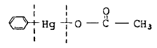

식물보호산업기사 (2015-03-08 기출문제)
1과목: 식물병리학
1. 유사균류에 의한 병이 아닌 것은?
- 벼 오갈병
- 토마토 역병
- 오이 노균병
- 십자화과 식물의 무사마귀병
(정답률: 74%)

2. 벼 잎에 나타난 방추형 갈색병반으로 육안적 진단이 가능한 병은?
- 도열병
- 깨씨무늬병
- 흰잎마름병
- 줄무늬잎마름병
(정답률: 79%)
3. 배추 등에서 무사마귀병(뿌리혹병)을 일으키는 병원균은 무엇인가?
- Fulvia fulva
- Rhizoctonia solani
- Plasmodiophora brassicae
- Pectobacterium carotovorum
(정답률: 53%)
4. 미생물이 생산하는 물질로 다른 미생물의 생육을 억제하는 점을 이용한 농약은?
- 훈증제
- 항생제
- 보르도액제
- 유기염소제
(정답률: 79%)
5. 식물병원균 감염 후 나타나는 저항성에 관한 것이 아닌 것은?
- 기공수의 증가
- Phytoalexin의 생성
- 기주의 잎에 과민반응
- 세포벽 안쪽에 돌기형성
(정답률: 79%)
6. 콩 자주빛무늬병(자주무늬병) 균의 월동처는?
- 토양
- 뿌리
- 종자
- 매개곤충
(정답률: 60%)
7. 질소비료를 적게 주어 도열병을 방제하는 방법은?
- 화학적 방제방법
- 생물적 방제방법
- 물리적 방제방법
- 경종적 방제방법
(정답률: 67%)
8. 밀 줄기녹병의 병원은?
- 세균
- 진균
- 바이러스
- 파이토플라스마
(정답률: 71%)
9. 식물 바이러스병 진단병으로 옳지 않은 것은?
- 혈청학적 진단법
- 파지에 의한 진단법
- 지표식물에 의한 진단법
- 핵상 중합효소연쇄반응법
(정답률: 79%)
10. 병원균이 주로 종자 전염하는 병은?
- 감자 역병
- 오이 노균병
- 보리 흰가루병
- 보리 겉깜부기병
(정답률: 76%)
11. 식물병원균의 레이스를 판단하기 위해서 사용되는 특정한 품종을 무엇이라 하는가?
- 선택 품종
- 지표 품종
- 판별 품종
- 깃발 품종
(정답률: 83%)
12. 경란전염에 대한 설명으로 옳은 것은?
- 가벼운 일이 잘 전염된다.
- 전염의 어렵고 쉬운 정도를 말한다.
- 산란 후 병원이 알에 침입하여 전염된다.
- 매개곤충의 알을 거쳐 다음 세대로 병원이 전해진다.
(정답률: 84%)
13. 균사가 변형하여 유사조직을 형성하고, 구형 또는 입상 이며 불량환경에 저항성이 강한 것은?
- 균사
- 균핵
- 포자퇴
- 분생포자
(정답률: 79%)
14. 다음 중 항생물질이 아닌 것은?
- Phthalide
- Kasugamycin
- Streptomycin
- polyoxin-B
(정답률: 68%)
15. 다음 중 진균(곰팡이)에 의해서 일어나는 병은?
- 벼 흰잎마름병
- 고추 풋마름병
- 보리 속깜부기병
- 담배 모자이크병
(정답률: 70%)
16. 다음 중 산성비에 가장 강한 수종은?
- 곰솔
- 양버즘나무
- 물푸레나무
- 일본잎갈나무
(정답률: 78%)
17. 다음 중 배추 무름병균의 특성은?
- 주모가 있는 그램양성세균이다.
- 주모가 없는 그램음성세균이다.
- 주모가 없는 그램양성세균이다.
- 주모가 있는 그램음성세균이다.
(정답률: 75%)
18. 빈번한 강우조건 아래에서 가장 발생하기 쉬운 액류의 병은?
- 줄기녹병
- 속깜부기병
- 겉깜부기병
- 붉은곰팡이병
(정답률: 69%)
19. 다음 중 바이러스를 매개하는 선충이 아닌 것은?
- Xiphinema
- Trichodorus
- Meloidogyne
- Paratrichodorus
(정답률: 72%)
20. 주로 저온에서 발생이 많은 병은?
- 채소류 무름병
- 맥류 줄기녹병
- 토마토 시들음병
- 사과나무 탄저병
(정답률: 54%)
2과목: 농림해충학
21. 곤충의 더듬이는 종이나 암수에 따라 모양이 다르나 기본적으로 3부분으로 되어 있다. 다음 중 더듬이의 3부분에 속하지 않는 것은?
- 도래마디
- 팔굽마디
- 자루마디
- 채찍마디
(정답률: 72%)
22. 곤추에서 부화한 유충(또는 약충)이 성충까지 발육하는 과정을 무엇이라고 하는가?
- 생식 과정
- 배자 발육과정
- 배우자 형성과정
- 후배자 발육과정
(정답률: 72%)
23. 방패벌레는 어느 목에 속하는가?
- 벌목
- 노린재목
- 딱정벌레목
- 부채벌레목
(정답률: 67%)
24. 2모작 맥류재배를 하면 많이 발생하는 해충은?
- 벼멸구
- 애멸구
- 흰등멸구
- 혹명나방
(정답률: 66%)
25. 땅강아지의 분류학적 위치는?
- 매미목
- 노린재목
- 사마귀목
- 메뚜기목
(정답률: 76%)
26. 다음 중 곤충의 특징에 관한 설명으로 틀린 것은?
- 곤충류는 마디발동물문에 속하는 자연군이다.
- 몸통이 머리, 가슴, 배의 3부분으로 구성되어 있다.
- 머리에 촉각, 겹눈, 홀눈 및 입틀 등의 부속지가 있다.
- 가슴은 앞, 가운데, 뒷가슴으로 되어 있고 4쌍의 다리가 있다.
(정답률: 86%)
27. 다음 중 신갈나무에 피해를 주는 참나무 시들음병의 매개충은?
- 솔잎혹파리
- 광릉긴나무좀
- 미국흰불나방
- 버즘나무방패벌레
(정답률: 76%)
28. 해충의 생물적 방제에 대한 설명으로 옳은 것은?
- 우리나라에서는 생물적 방제 성공사례가 없다.
- 모든 방제방법에서 생물적 방제가 최우선적으로 선행되어야 한다.
- 생물적 방제는 해당 생태계가 주변 생태계로부터 격리 되어 있을 때 성공 확률이 높다.
- 생물적 방제에서 개체군이 천적에 의해 조절된다는 것은 천적에 의해 억제되는 밀도수준이 경제적 피해 수준 이상이 된다는 것을 의미한다.
(정답률: 72%)
29. 간모에 대한 설명으로 옳은 것은?
- 날개가 있는 수컷 진딧물이다.
- 날개가 있는 암컷 진딧물이다.
- 월동란에서 부화한 진딧물이다.
- 모체에서 태어난 날개가 없는 암컷 진딧물이다.
(정답률: 70%)
30. 다음 중 번데기 시기가 없는 불완전변태를 하는 것은?
- 매미나방
- 솔잎혹파리
- 솔수염하늘소
- 진달래방패벌레
(정답률: 69%)
31. 벼잎벌레의 월동 충태는?
- 알
- 유충
- 성충
- 번데기
(정답률: 52%)
32. 딱정벌레목의 가뢰과에서 볼 수 있는 변태의 유형은?
- 무변태
- 과변태
- 완전변태
- 불완전변태
(정답률: 80%)
33. 다음 중 유충이 저작형 입틀을 가진 식엽성 해충은?
- 매미나방
- 솔잎혹파리
- 벚나무응애
- 소나무가루깍지벌레
(정답률: 60%)
34. 벼 재배시 후기 해충방제에 가장 중점을 두어야 할 대상 해충은?
- 애멸구
- 벼멸구
- 끝동매미충
- 번개매미충
(정답률: 76%)
35. 곤충의 휴면에 대한 설명으로 틀린 것은?
- 휴면은 내분비계의 지배를 받지 않는다.
- 휴면에서 깨어나기 위해서는 휴면 타파조건이 필요하다.
- 휴면 유발 요인에는 일장, 온도, 먹이, 생리상태 등이 있다.
- 곤충이 발육이나 생식에 불리한 환경을 극복하기 위한 기작이다.
(정답률: 80%)
36. 이화명나방에 대한 설명으로 옳지 않은 것은?
- 뒷날개는 흰색이다.
- 더듬이는 몽둥이 모양이다.
- 앞날개의 외연에는 검은점이 없다.
- 앞날개는 엷은 갈색을 띤 회색이다.
(정답률: 79%)
37. 밤나무혹벌은 우리나라에 침입하여 재래종 밤나무에 극심한 피해를 주었다. 이 해충 방제에 우리나라에서 이용되고 있는 가장 효과적인 방제법은?
- 불임성 이용
- 접촉살충제 살포
- 내충성 품종 이용
- 침투성약제 수간주사
(정답률: 72%)
38. 곤충의 분류 중 곤충의 먹이 종류에 따라 구분하는 형태가 아닌 것은?
- 광식성
- 식식성
- 육식성
- 잡식성
(정답률: 70%)
39. 곤충의 체벽을 이루고 있는 층 중에서 세포가 분포하고 있는 층은?
- 진피층
- 기저막
- 원표피층
- 외표피층
(정답률: 78%)
40. 소나무좀에 대한 설명으로 옳은 것은?
- 번데기로 월동한다.
- 1년에 2~3회 발생한다.
- 5℃ 내외로 기온이 낮을 때 활동이 원활하다.
- 성충이 나무줄기에 구멍을 뚫어 알을 낳는다.
(정답률: 67%)
3과목: 농약학
41. 성유인 물질(sex attractant)의 특성이 아닌 것은?
- 종특이성(specificity)이 있다.
- 미량으로도 강한 유인능(potency)이 있다.
- 모두 천연산물(natural compound)이다.
- 원거리에서도 유효성(sffectiveness)이 있다.
(정답률: 77%)
42. 보르도액의 사용상 주의사항으로 옳지 않은 것은?
- 만든 즉시로 살포하여야 하며 오래 두면 입자가 커져 약효가 떨어진다.
- 살포액이 완전 건조해서 막을 형성해야 하므로 비가 오기 직전이나 직후에 살포해서는 안 된다.
- 치료를 목적으로 사용하는 것이므로 발병 후 즉시 살포해야 한다.
- 약해가 나기 쉬운 작물에 대해서는 8~10 두식의 묽은 보르도액을 살포해야 한다.
(정답률: 79%)
43. 살충제의 살충 작용점의 기작이 아닌 것은?
- 균체성분 생합성 저해
- 에너지생성 저해
- 신경기능 저해
- 치틴(Chitin) 생합성 저해
(정답률: 49%)
44. Carbamate계 살충제의 일반적인 특성에 대한 설명으로 옳은 것은?
- 유기염소제와 같이 체내에 서서히 축적된다.
- 인축에 대한 독성이 낮고 비교적 안정한 화합물이다.
- 살충작용이 일반적이고 비선택적이다.
- 해충에 대한 적용범위가 좁다.
(정답률: 71%)
45. 살포액(액상시용제)의 물리적인 성질이 아닌 것은?
- 유화성
- 수화성
- 현수성
- 토분성
(정답률: 68%)
46. 농약을 제조할 때 사용되는 가성소다(NaOH)에 대한 설명으로 틀린 것은?
- 강알칼리이다.
- 상온에서 액체로 취기가 있다.
- 조해성이 강하다.
- 피부의 단백질을 녹이는 작용을 한다.
(정답률: 72%)
47. 헤테로 옥신(hetero auxin)이라고 부르는 식물생장 조절제는?
- BA
- IAA
- MH
- 2,4-D
(정답률: 78%)
48. 비중이 0.5인 유제(50%)를 0.⑤% 액으로 희석하여 면적 10a당 5말(1말 : 18L)로 살포하려 할 때의 소요약량은 약 몇 mL 인가?
- 100
- 120
- 180
- 280
(정답률: 75%)
49. 퀴나졸린계의 살비제로서 응애의 모든 생육 단계에서 효과가 우수한 살충제는?
- 인독사카브
- 티아클로프리드
- 페나자퀸
- 클로르피리포스
(정답률: 74%)
50. 농약을 음식물로 잘못 알고 마셨을 때 나타나는 중독은?
- 급성중독
- 긴급독성
- 만성중독
- 식중독
(정답률: 87%)
51. 농약의 잔류허용량을 정할 때 ADI를 사용하는데 이는 무엇을 의미하는가?
- 농약의 1일 섭취 허용량
- 작물란류의 반감기를 표시하는 말
- 토양잔류의 반감기를 표시하는 말
- 50kg의 체중을 가진 사람이 농약이 포함된 음식물을 매일 먹었을 때 100일 만에 죽는 량
(정답률: 82%)
52. 네레이스톡신(nereistoxin)을 기초로한 천연물 유도형의 살충제는?
- 칼탑입제
- 펜프로유제
- 벤즈수화제
- 파라핀오일제
(정답률: 65%)
53. 수화제를 희석하였을 때 고상의 미세입자가 용액 중에 균일하게 분산되어 있는 물리적인 성질을 무엇이라 하는가?
- 현수성
- 습윤성
- 확전성
- 유화성
(정답률: 72%)
54. 농약원제에 발연제(니트로셀룰로오스), 방염제 등을 혼합하고 기타 보조제 및 증량제를 첨가하여 제조한 제형은?
- 훈증제
- 훈연제
- 연무제
- 미립제
(정답률: 67%)
55. 다음 농약에서 Hg는 어떤 작용과 관계가 가장 밀접한가?

- 친유기(親油基)
- 친수기(親水基)
- 독성기(禿城記)
- 강친수기(强親水基)
(정답률: 61%)
56. 유기염소계의 침투성 살균제로서 예방 및 치료효과가 있으며 작물의 흰가루병 및 녹병에 적용할 수 있는 농약은?
- 플루실라졸 수화제
- 펜헥사이드 수화제
- 트리포린 유제
- 아이소프로티올레인 유제
(정답률: 48%)
57. 다음 중 보조제가 아닌 것은?
- 용제
- 계면활성제
- 증량제
- 세립제
(정답률: 70%)
58. 복합저항성에 대한 설명으로 틀린 것은?
- 살충제에 대하여 저항성이 발달한 해충이 한번도 사용된 적이 없지만 작용기구가 같은 살충제에 대하여 저항성을 나타낸 것을 말한다.
- 살충작용이 다른 2종 이상에 대하여 동시에 해충이 저항성을 나타내는 현상을 말한다.
- 두 개 이상의 유전자가 별개로 관여하고 있기 때문에 항상 같은 현상이 나타난다는 것이 한정되어 있지 않다.
- 한 개체 안에 두 가지 이상의 저항성기작이 존재하기 때문에 발생하는 현상이다.
(정답률: 65%)
59. 다음 농약 중 곤충생장조절제(IGR계통)의 농약이 아닌 것은?
- 벤설푸론 메칠(Bensulfuron-methyl)
- 부프러페진(Buprofezin)
- 디플루벤주론(Diflubenzuron)
- 테플루벤주론(Teflubenzuron)
(정답률: 60%)
60. 다조에 85% 분제 1kg을 50%의 분제로 만들려면 증량제가 얼마나 필요한가?
- 0.58kg
- 0.7kg
- 1.0kg
- 1.5kg
(정답률: 71%)
4과목: 잡초방제학
61. 우리나라 논잡초 방제를 위하여 사용하는 제초제 중 가장 많이 사용되는 제형은?
- 입제
- 유제
- 수화제
- 분제
(정답률: 67%)
62. 벼 이앙재배에서 주로 우점하는 잡초들로만 나열한 것은?
- 피, 물달개비, 올방개, 올미
- 비름, 바랭이, 망초, 물달개비
- 쇠비름, 별꽃, 명아주, 바랭이
- 바랭이, 깨풀, 쇠비름, 가래
(정답률: 76%)
63. 경엽처리용 제초제로 벼와 피 사이에서 속간선택성을 일으키는 것은?
- propanil
- 2,4-D
- bentazon
- butachlor
(정답률: 42%)
64. 혼합 제초제의 효과로 볼 수 없는 것은?
- 상가적 효과가 있다.
- 길항적 효과가 있다.
- 살초폭을 넓힌다.
- 상승적 효과가 있다.
(정답률: 79%)
65. 문제 잡초들의 특성이 아닌 것은?
- 광합성 효율이 높고 생장이 매우 빠르며, 대부분 C4형 광합성을 한다.
- 종자 또는 지하번식기관으로 번식할 수 있으며, 많은 종자를 생산한다.
- 불량한 환경조건에 잘 적응하며, 과습의 조건에서도 견뎌 낼 수 있는 메카니즘을 가지고 있다.
- 휴면성이 낮아 불리한 조건 아래에서도 발아율이 높다.
(정답률: 77%)
66. 잡초에 의한 작물의 피해가 가장 심한 경우는?
- 화본과 작물 재배지에 발생한 광엽잡초
- C3작물 재배지에 발생한 C4잡초
- 벼 재배지에 발생한 가막사리
- 광엽 작물 재배지에 발생한 화본과 잡초
(정답률: 85%)
67. 10a당 3kg을 살포하는 제초제를 100m2에 처리하고자 할 때 필요한 량은?
- 3g
- 30g
- 300g
- 1000g
(정답률: 68%)
68. 다음 잡초 중 방동사니과(科) 잡초가 아닌 것은?
- 올챙이고랭이
- 매자기
- 벗풀
- 너도방동사니
(정답률: 67%)
69. 종자휴면의 원인에 대한 설명으로 틀린 것은?
- 종피가 너무 두껍다.
- 발아억제물질이 많이 들어있다.
- 배가 미숙하거나 후숙되지 않았다.
- 발아촉진물질이 많이 들어있다.
(정답률: 76%)
70. 제초제 중 작물에 나타나는 약해증상으로 틀린 것은?
- Oxadiazon : 벼 엽초기부 갈색 반점 발생
- Glyphosate : 갈변, 고사
- Butachlor : 생육위축, 생육 억제증상 발생
- Dicamba : 괴사, 반점
(정답률: 57%)
71. 잡초종자의 수명을 좌우하는 요인 중 저장조건에 해당되지 않는 것은?
- 휴면성
- 수분조건
- 산소조건
- 매몰된 깊이
(정답률: 45%)
72. 잡초와의 경합에 대한 설명으로 틀린 것은?
- 잡초경합한계기간 내에서는 잡초를 방제할 필요가 없다.
- 잡초완전방제보다 소득을 최대화할 수 있는 수준으로 제초제를 처리한다.
- 방제노력과 방제로 인한 수량이득이 상충되는 허용밀도에 추가된 한계영역을 경제적 허용한계밀도라고 한다.
- 잡초경합한계기간은 일반적으로 작물의 전생육기간의 첫 1/3~1/2 기간 또는 첫 1/4~1/3 기간에 해당된다.
(정답률: 75%)
73. 벼 재배방법 중 잡초의 피해가 가장 큰 재배방법은?
- 건답직파 재배
- 담수직파 재배
- 어린모기계이앙 재배
- 중묘기계이앙 재배
(정답률: 81%)
74. 잔디밭에 주로 많이 발생되는 잡초는?
- 개비름, 한련초
- 토끼풀, 꽃다지
- 민들레, 명아주
- 여뀌, 강아지풀
(정답률: 78%)
75. 우리나라에서 발생하고 있는 대부분의 잡초종자의 발아 최적온도 범위는?
- 0~10℃
- 10~15℃
- 15~30℃
- 30~40℃
(정답률: 80%)
76. 산성토양에서 잘 적응하는 잡초가 아닌 것은?
- 둑새풀
- 황새냉이
- 쇠비름
- 냉이
(정답률: 51%)
77. 제초효과가 우수하고 일정한 지역에 손쉽게 처리할 수 있어 노력과 비용이 적게 드는 잡초 방제법은?
- 화학적 방제법
- 물리적 방제법
- 생물적 방제법
- 경종적 방제법
(정답률: 79%)
78. 제초제의 선택성에 영향을 미치는 요인 중 물리적 요인으로 볼 수 없는 것은?
- 광도
- 제형
- 처리약량
- 처리방법
(정답률: 70%)
79. 잡초를 생활형에 따라 바르게 분류한 것은?
- 일년생 잡초 – 피, 벗풀
- 월년생 잡초 – 별꽃, 명아주
- 다년생 잡초 – 올방개, 올미
- 동계 잡초 – 냉이, 강아지풀
(정답률: 63%)
80. 우리나라 논에서 발생하는 화본과 잡초가 아닌 것은?
- 물달개비
- 강피
- 나도겨풀
- 뚝새풀
(정답률: 49%)